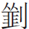

此回櫳翠品茶，怡紅遇劫。蓋妙玉雖以清淨無為自守，而怪潔之癖未免有過，老嫗只污得一杯，見而勿用，豈似玉兄日享洪福，竟至無以復加而不自知。故老嫗眠其床，臥其蓆，酒屁熏其屋，却被襲人遮過，則仍用其床其蓆其屋。亦作者特為轉眼不知身後事寫來作戒，紈褲公子可不慎哉？
此回櫳翠品茶，怡紅遇劫。蓋妙玉雖以清淨無為自守，而怪潔之癖未免有過，老嫗只污得一杯，見而勿用，豈似玉兄日享洪福，竟至無以復加而不自知。故老嫗眠其床，臥其蓆，酒屁熏其屋，却被襲人遮過，則仍用其床其蓆其屋。亦作者特為轉眼不知身後事寫來作戒，紈褲公子可不慎哉？
 任呼牛馬從來樂，隨分清高方可安。自古世情難意擬，淡妝濃抹有千般。立松軒。
任呼牛馬從來樂，隨分清高方可安。自古世情難意擬，淡妝濃抹有千般。立松軒。
話說劉姥姥兩隻手比著說道：「花兒落了結個大倭瓜。」衆人聽了哄堂大笑起來。於是吃過門杯，因又逗趣笑道：「實告訴說罷，我的手脚子粗笨，又喝了酒，仔細失手打了這磁杯。有木頭的杯取個子來，我便失了手，掉了地下也無礙。」衆人聽了，又笑起來。
鳳姐兒聽如此說，便忙笑道：「果真要木頭的，我就取了來。可有一句話先說下：這木頭的可比不得磁的，他都是一套，定要吃遍一套方使得。」劉姥姥聽了心下敁敠道：「我方纔不過是趣話取笑兒，誰知他果真竟有！我時常在村莊鄉紳大家也赴過席，金杯銀杯倒都也見過，從來沒見有木頭杯之說。哦，是了，想必是小孩子們使的木碗兒，不過誑我多喝兩碗。別管他，橫竪這酒蜜水兒似的，多喝點子也無妨。」 為登厠伏脉。想畢，便說：「取來再商量。」鳳姐乃命豐兒：「到前面裡間屋，書架子上有十個竹根套杯取來。」豐兒聽了，答應纔然要去，鴛鴦笑道：「我知道你這十個杯還小。况且你纔說是木頭的，這會子又拿了竹根子的來，倒不好看。不如把我們那裡的黃楊根整摳的十個大套杯拿來，灌他十下子。」鳳姐兒笑道：「更好了。」鴛鴦果命人取來。劉姥姥一看，又驚又喜：驚的是一連十個挨次大小分下來，那大的足似個小盆子，第十個極小的還有手裡的杯子兩個大；喜的是雕鏤奇絕，一色山水、樹木、人物，並有草字以及圖印。因忙說道：「拿了那小的來就是了，怎麽這樣多？」鳳姐兒笑道：「這個杯沒有喝一個的理。我們家因沒有這大量的，所以沒人敢使他。姥姥既要，好容易尋了出來，必定要挨次吃一遍纔使得。」劉姥姥唬的忙道：「這個不敢。好姑奶奶，饒了我罷。」
為登厠伏脉。想畢，便說：「取來再商量。」鳳姐乃命豐兒：「到前面裡間屋，書架子上有十個竹根套杯取來。」豐兒聽了，答應纔然要去，鴛鴦笑道：「我知道你這十個杯還小。况且你纔說是木頭的，這會子又拿了竹根子的來，倒不好看。不如把我們那裡的黃楊根整摳的十個大套杯拿來，灌他十下子。」鳳姐兒笑道：「更好了。」鴛鴦果命人取來。劉姥姥一看，又驚又喜：驚的是一連十個挨次大小分下來，那大的足似個小盆子，第十個極小的還有手裡的杯子兩個大；喜的是雕鏤奇絕，一色山水、樹木、人物，並有草字以及圖印。因忙說道：「拿了那小的來就是了，怎麽這樣多？」鳳姐兒笑道：「這個杯沒有喝一個的理。我們家因沒有這大量的，所以沒人敢使他。姥姥既要，好容易尋了出來，必定要挨次吃一遍纔使得。」劉姥姥唬的忙道：「這個不敢。好姑奶奶，饒了我罷。」
 挾炎的苦惱。賈母、薛姨媽、王夫人知道他上了年紀的人，禁不起，忙笑道：「說是說，笑是笑，不可多吃了，只吃這頭一杯罷。」劉姥姥道：「阿彌陀佛！我還是小杯吃罷。把這大杯收著，我帶了家去慢慢的吃罷。」說的衆人又笑起來。鴛鴦無法，只得命人滿斟了一大杯，劉姥姥兩手捧著喝。賈母薛姨媽都道：「慢些，不要嗆了。」
挾炎的苦惱。賈母、薛姨媽、王夫人知道他上了年紀的人，禁不起，忙笑道：「說是說，笑是笑，不可多吃了，只吃這頭一杯罷。」劉姥姥道：「阿彌陀佛！我還是小杯吃罷。把這大杯收著，我帶了家去慢慢的吃罷。」說的衆人又笑起來。鴛鴦無法，只得命人滿斟了一大杯，劉姥姥兩手捧著喝。賈母薛姨媽都道：「慢些，不要嗆了。」
薛姨媽又命鳳姐兒佈了菜。鳳姐笑道：「姥姥要吃什麽，說出名兒來，我搛了喂你。」劉姥姥道：「我知什麽名兒，樣樣都是好的。」賈母笑道：「你把茄鯗搛些喂他。」鳳姐兒聽說，依言搛些茄鯗送入劉姥姥口中，因笑道：「你們天天吃茄子，也嚐嚐我們的茄子弄的可口不可口。」劉姥姥笑道：「別哄我了，茄子跑出這個味兒來了，我們也不用種糧食，只種茄子了。」衆人笑道：「真是茄子，我們再不哄你。」劉姥姥詫異道：「真是茄子？我白吃了半日。姑奶奶再喂我些，這一口細嚼嚼。」鳳姐果又搛了些放入口內。劉姥姥細嚼了半日，笑道：「雖有一點茄子香，只是還不像是茄子。告訴我是個什麽法子弄的，我也弄著吃去。」鳳姐兒笑道：「這也不難。你把纔下來的茄子把皮

了，只要淨肉，切成碎釘子，用鶏油炸了，再用鶏脯子肉並香菌、新笋、蘑菇、五香腐幹、各色乾果子，都切成釘子，拿鶏湯煨幹，將香油一收，外加糟油一拌，盛在磁罐子裡封嚴，要吃時拿出來，用炒的鶏瓜一拌就是。」劉姥姥聽了，搖頭吐舌說道：「我的佛祖！倒得十來隻鶏來配他，怪道這個味兒！」 一面說笑，一面慢慢的吃完了酒，還只管細玩那杯。鳳姐笑道：「還是不足興，再吃一杯罷！」劉姥姥忙道：「了不得，那就醉死了。我因為愛這樣範，虧他怎麽作了。」鴛鴦笑道：「酒吃完了，到底這杯子是什麽木的？」劉姥姥笑道：「怨不得姑娘不認得，你們在這金門綉戶的，如何認得木頭！我們成日家和樹林子作街坊，困了枕著他睡，乏了靠著他坐，荒年間餓了還吃他，眼睛裡天天見他，耳朵裡天天聽他，口兒裡天天講他，所以好歹真假，我是認得的。讓我認一認。」好充懂得的來看。一面說，一面細細端詳了半日，道：「你們這樣人家斷沒有那賤東西，那容易得的木頭，你們也不收著了。我掂著這杯體重，斷乎不是楊木，這一定是黃松做的。」衆人聽了，哄堂大笑起來。
只見一個婆子走來請問賈母，說：「姑娘們都到了藕香榭，請示下，就演罷還是再等一會子？」賈母忙笑道：「可是倒忘了他們，就叫他們演罷。」那個婆子答應去了。不一時，只聽得簫管悠揚，笙笛並發。正值風清氣爽之時，那樂聲穿林度水而來，自然使人神怡心曠。
寶玉先禁不住，拿起壺來斟了一杯，一口飲盡。作者似曾在座。復又斟上，纔要飲，只見王夫人也要飲，命人換暖酒，寶玉連忙將自己的杯捧了過來，送到王夫人口邊，妙極！忽寫寶玉如此，便是天地間母子之至情至性。獻芹之民之意，令人酸鼻。王夫人便就他手內吃了兩口。一時暖酒來了，寶玉仍歸舊坐，王夫人提了暖壺下席來，衆人皆都出了席，薛姨媽也立起來，賈母忙命李、鳳二人接過壺來：「讓你姑媽坐了，大家纔便。」王夫人見如此說，方將壺遞與鳳姐，自己歸坐。賈母笑道：「大家吃上兩杯，今日著實有趣。」說著擎杯讓薛姨媽，又向湘雲寶釵道：「你姐妹兩個也吃一杯。你妹妹雖不大會吃，也別饒他。」說著自己已幹了。湘雲、寶釵、黛玉也都幹了。當下劉姥姥聽見這般音樂，且又有了酒，越發喜的手舞足蹈起來。寶玉因下席過來向黛玉笑道：「你瞧劉姥姥的樣子。」黛玉笑道：「當日聖樂一奏，百獸率舞，如今纔一牛耳。」隨筆寫來，趣極。衆姐妹都笑了。
須臾樂止，薛姨媽出席笑道：「大家的酒想也都有了，且出去散散再坐罷。」賈母也正要散散，於是大家出席，都隨著賈母遊玩。賈母因要帶著劉姥姥散悶，遂携了劉姥姥至山前樹下盤桓了半晌，又說與他這是什麽樹，這是什麽石，這是什麽花。劉姥姥一一的領會，又向賈母道：「誰知城裡不但人尊貴，連雀兒也是尊貴的。偏這雀兒到了你們這裡，他也變俊了，也會說話了。」衆人不解，因問什麽雀兒變俊了，會講話。劉姥姥道：「那廊下金架子上站的綠毛紅嘴是鸚哥兒，我是認得的。那籠子裡的黑老鴰子怎麽又長出鳳頭來，也會說話呢。」衆人聽了都笑將起來。
一時只見丫鬟們來請用點心。賈母道：「吃了兩杯酒，倒也不餓。也罷，就拿了這裡來，大家隨便吃些罷。」丫鬟便去抬了兩張几來，又端了兩個小捧盒。揭開看時，每個盒內兩樣：這盒內一樣是藕粉桂糖糕，一樣是松穰鵝油卷；那盒內一樣是一寸來大的小餃兒，賈母因問什麽餡兒，婆子們忙回是螃蟹的。賈母聽了，皺眉說：「這油膩膩的，誰吃這個！」那一樣是奶油炸的各色小面果，也不喜歡。因讓薛姨媽吃，薛姨媽只揀了一塊糕；賈母揀了一個卷子，只嚐了一嚐，剩的半個遞與丫鬟了。
劉姥姥因見那小面果子都玲瓏剔透，便揀了一朵牡丹花樣的笑道：「我們那裡最巧的姐兒們，也不能鉸出這麽個紙的來。我又愛吃，又捨不得吃，包些家去給他們做花樣子去倒好。」世上竟有這樣人。衆人都笑了。賈母道：「家去我送你一罎子。你先趁熱吃這個罷。」別人不過揀各人愛吃的一兩點就罷了；劉姥姥原不曾吃過這些東西，且都作的小巧，不顯盤堆的，他和板兒每樣吃了些，就去了半盤子。剩的，鳳姐又命攢了兩盤並一個攢盒，與文官等吃去。
忽見奶子抱了大姐兒來，大家哄他頑了一會。那大姐兒因抱著一個大柚子玩的，忽見板兒抱著一個佛手，便也要佛手。小兒常情，遂成千里伏綫。丫鬟哄他取去，大姐兒等不得，便哭了。衆人忙把柚子與了板兒，伏綫千里。將板兒的佛手哄過來與他纔罷。那板兒因頑了半日佛手，此刻又兩手抓著些果子吃，又忽見這柚子又香又圓，更覺好頑，且當球踢著玩去，也就不要佛手了。柚子即今香(團)[櫞]之屬也，應與「緣」通。佛手者，正指迷津者也。以小兒之戲暗透前後通部脉絡，隱隱約約，毫無一絲漏泄，豈獨為劉姥姥之俚言博笑而有此一大回文字哉？ 畫工。
當下賈母等吃過茶，又帶了劉姥姥至櫳翠庵來。妙玉忙接了進去。至院中見花木繁盛，賈母笑道：「到底是他們修行的人，沒事常常修理，比別處越發好看。」一面說，一面便往東禪堂來。妙玉笑往裡讓，賈母道：「我們纔都吃了酒肉，你這裡頭有菩薩，沖了罪過。我們這裡坐坐，把你的好茶拿來，我們吃一杯就去了。」妙玉聽了，忙去烹了茶來。寶玉留神看他是怎麽行事。只見妙玉親自捧了一個海棠花式雕漆填金雲龍獻壽的小茶盤，裡面放一個成窑五彩小蓋鍾，捧與賈母。賈母道：「我不吃六安茶。」妙玉笑說：「知道。這是老君眉。」賈母接了，又問是什麽水。妙玉笑回：「是舊年蠲的雨水。」賈母便吃了半盞，便笑著遞與劉姥姥說：「你嚐嚐這個茶。」劉姥姥便一口吃盡，笑道：「好是好，就是淡些，再熬濃些更好了。」賈母衆人都笑起來。然後衆人都是一色官窑脫胎填白蓋碗。
那妙玉便把寶釵和黛玉的衣襟一拉，二人隨他出去，寶玉悄悄的隨後跟了來。只見妙玉讓他二人在耳房內，寶釵坐在榻上，黛玉便坐在妙玉的蒲團上。妙玉自向風爐上扇滾了水，另泡一壺茶。寶玉便走了進來，笑道：「偏你們吃梯己茶呢。」二人都笑道：「你又趕了來飺茶吃。這裡並沒你的。」妙玉剛要去取杯，只見道婆收了上面的茶盞來。妙玉忙命：「將那成窑的茶杯別收了，擱在外頭去罷。」寶玉會意，知為劉姥姥吃了，他嫌髒不要了。又見妙玉另拿出兩隻杯來。一個旁邊有一耳，杯上鐫著「𤫫瓟斝」三個隸字，後有一行小真字是「晋王愷珍玩」，又有「宋元豐五年四月眉山蘇軾見於秘府」一行小字。妙玉便斟了一斝，遞與寶釵。那一隻形似鉢而小，也有三個垂珠篆字，鐫著「點犀䀉」。妙玉斟了一䀉與黛玉。仍將前番自己常日吃茶的那只綠玉斗來斟與寶玉。
寶玉笑道：「常言『世法平等』，他兩個就用那樣古玩奇珍，我就是個俗器了。」妙玉道：「這是俗器？不是我說狂話，只怕你家裡未必找的出這麽一個俗器來呢。」寶玉笑道：「俗說『隨鄉入鄉』，到了你這裡，自然把那金玉珠寶一概貶為俗器了。」妙玉聽如此說，十分歡喜，遂又尋出一隻九曲十環一百二十節蟠虬整雕竹根的一個大出來，笑道：「就剩了這一個，你可吃的了這一海？」寶玉喜的忙道：「吃的了。」妙玉笑道：「你雖吃的了，也沒這些茶糟蹋。茶下「糟蹋」二字，成窑杯已不屑再要，妙玉真清潔高雅，然亦怪譎孤僻甚矣。實有此等人物，但罕耳。豈不聞『一杯為品，二杯即是解渴的蠢物，三杯便是飲牛飲騾了』。你吃這一海便成什麽？」說的寶釵、黛玉、寶玉都笑了。妙玉執壺，只向海內斟了約有一杯。寶玉細細吃了，果覺輕浮無比，賞贊不絕。妙玉正色道：「你這遭吃的茶是託他兩個福，獨你來了，我是不給你吃的。」寶玉笑道：「我深知道的，我也不領你的情，只謝他二人便是了。」妙玉聽了，方說：「這話明白。」
黛玉因問：「這也是舊年的雨水？」妙玉冷笑道：「你這麽個人，竟是大俗人，連水也嚐不出來。這是五年前我在玄墓蟠香寺住著，收的梅花上的雪，共得了那一鬼臉青的花瓮一瓮，總捨不得吃，埋在地下，妙手。層層叠起，竟能以他人所畫之天王作衆神矣。今年夏天纔開了。我只吃過一回，這是第二回了。你怎麽嚐不出來？隔年蠲的雨水那有這樣輕浮，如何吃得。」黛玉知他天性怪僻，不好多話，亦不好多坐，吃過茶，便約著寶釵走了出來。
寶玉和妙玉陪笑道：「那茶杯雖然髒了，白撂了豈不可惜？依我說，不如就給那貧婆子罷，他賣了也可以度日。你道可使得。」妙玉聽了，想了一想，點頭說道：「這也罷了。幸而那杯子是我沒吃過的，若我使過，我就砸碎了也不能給他。更奇！世上我也見過此等人。你要給他，我也不管你，只交給你，快拿了去罷。」寶玉道：「自然如此，你那裡和他說話授受去，越發連你也髒了。人若忘形，最喜此等言語。只交與我就是了。」妙玉便命人拿來遞與寶玉。寶玉接了，又道：「等我們出去了，我叫幾個小么兒來河裡打幾桶水來洗地如何？」妙玉笑道：「這更好了，只是你囑咐他們，抬了水只擱在山門外頭墻根下，別進門來。」偏於無可寫處，深入一層。寶玉道：「這是自然的。」說著，便袖著那杯，遞與賈母房中小丫頭拿著，說：「明日劉姥姥家去，給他帶去罷。」交代明白，賈母已經出來要回去。妙玉亦不甚留，送出山門，回身便將門閉了。不在話下。
且說賈母因覺身上乏倦，便命王夫人和迎春姊妹陪了薛姨媽去吃酒，自己便往稻香村來歇息。鳳姐忙命人將小竹椅抬來，賈母坐上，兩個婆子抬起，鳳姐李紈和衆丫鬟婆子圍隨去了，不在話下。這裡薛姨媽也就辭出。王夫人打發文官等出去，將攢盒散與衆丫鬟們吃去，自己便也乘空歇著，隨便歪在方纔賈母坐的榻上，命一個小丫頭放下簾子來，又命他捶著腿，吩咐他：「老太太那裡有信，你就叫我。」說著也歪著睡著了。
寶玉湘雲等看著丫鬟們將攢盒擱在山石上，也有坐在山石上的，也有坐在草地下的，也有靠著樹的，也有傍著水的，倒也十分熱鬧。一時又見鴛鴦來了，要帶著劉姥姥各處去逛，又另是一番氣象。衆人也都趕著取笑。一時來至「省親別墅」的牌坊底下，劉姥姥道：「噯呀！這裡還有個大廟呢。」說著，便爬下磕頭。衆人笑彎了腰。劉姥姥道：「笑什麽？這牌樓上字我都認得。我們那裡這樣的廟宇最多，都是這樣的牌坊，那字就是廟的名字。」衆人笑道：「你認得這是什麽廟？」劉姥姥便抬頭指那字道：「這不是『玉皇寶殿』四字？」衆人笑的拍手打脚，還要拿他取笑。劉姥姥覺得腹內一陣亂響，忙的拉著一個小丫頭，要了兩張紙就解衣。衆人又是笑，又忙喝他「這裡使不得！」忙命一個婆子帶了東北上去了。那婆子指與地方，便樂得走開去歇息。
那劉姥姥因喝了些酒，他脾氣不與黃酒相宜，且吃了許多油膩飲食，發渴多喝了幾碗茶，不免通瀉起來，蹲了半日方完。及出厠來，酒被風禁，且年邁之人，蹲了半天，忽一起身，只覺得眼花頭眩，辨不出路徑。四顧一望，皆是樹木山石樓臺房舍，却不知那一處是往那裡去的了，只得認著一條石子路慢慢的走來。及至到了房舍跟前，又找不著門，再找了半日，忽見一帶竹籬，劉姥姥心中自忖道：「這裡也有扁豆架子。」
一面想，一面順著花障走了來，得了一個月洞門進去。只見迎面忽有一帶水池，只有七八尺寬，石頭砌岸，裡邊碧瀏清水流往那邊去了，借劉姥姥醉中，寫境中景。上面有一塊白石橫架在上面。劉姥姥便度石過去，順著石子甬路走去，轉了兩個彎子，只見有一房門。於是進了房門，只見迎面一個女孩兒，滿面含笑迎了出來。劉姥姥忙笑道：「姑娘們把我丟下來了，要我碰頭碰到這裡來。」說了，只覺那女孩兒不答。劉姥姥便趕來拉他的手，「咕咚」一聲，便撞到板壁上，把頭碰的生疼。細瞧了一瞧，原來是一幅畫兒。劉姥姥自忖道：「原來畫兒有這樣活凸出來的。」一面想，一面看，一面又用手摸去，却是一色平的，點頭嘆了兩聲。一轉身方得了一個小門，門上挂著葱綠撒花軟簾。
劉姥姥掀簾進去，抬頭一看，只見四面墻壁玲瓏剔透，琴劍瓶爐皆貼在墻上，錦籠紗罩，金彩珠光，連地下踩的磚，皆是碧綠鑿花，竟越發把眼花了，找門出去，那裡有門？左一架書，右一架屏。剛從屏後得了一門轉去，只見他親家母也從外面迎了進來。劉姥姥詫異，忙問道：「你想是見我這幾日沒家去，虧你找我來。那一位姑娘帶你進來的？」他親家只是笑，不還言。劉姥姥笑道：「你好沒見世面，見這園裡的花好，你就沒死活戴了一頭。」他親家也不答。便心下忽然想起：「常聽大富貴人家有一種穿衣鏡，這別是我在鏡子裡頭呢罷。」說畢伸手一摸，再細一看，可不是，四面雕空紫檀板壁將鏡子嵌在中間。因說：「這已經攔住，如何走出去呢？」一面說，一面只管用手摸。
這鏡子原是西洋機括，可以開合。不意劉姥姥亂摸之間，其力巧合，便撞開消息，掩過鏡子，露出門來。劉姥姥又驚又喜，邁步出來，忽見有一副最精緻的床帳。他此時又帶了七八分醉，又走乏了，便一屁股坐在床上，只說歇歇，不承望身不由己，前仰後合的，朦朧著兩眼，一歪身就睡熟在床上。
且說衆人等他不見，板兒見沒了他姥姥，急的哭了。衆人都笑道：「別是掉在茅厠裡了？快叫人去瞧瞧。」因命兩個婆子去找，回來說沒有。衆人各處搜尋不見。襲人敁敠其道路：「是他醉了迷了路，順著這一條路往我們後院子裡去了。若進了花障子到後房門進去，雖然碰頭，還有小丫頭們知道；若不進花障子再往西南上去，若繞出去還好，若繞不出去，可够他繞回子好的。我且瞧瞧去。」一面想，一面回來，進了怡紅院便叫人，誰知那幾個房子裡小丫頭已偷空頑去了。
襲人一直進了房門，轉過集錦槅子，就聽的鼾齁如雷。忙進來，只聞見酒屁臭氣，滿屋一瞧，只見劉姥姥扎手舞脚的仰臥在床上。襲人這一驚不小，慌忙趕上來將他沒死活的推醒。那劉姥姥驚醒，睜眼見了襲人，連忙爬起來道：「姑娘，我失錯了！並沒弄髒了床帳。」一面說，一面用手去撣。
襲人恐驚動了人，被寶玉知道了，只向他搖手，不叫他說話。忙將鼎內貯了三四把百合香，仍用罩子罩上。些須收拾收拾，所喜不曾嘔吐，忙悄悄的笑道：「不相干，有我呢。你隨我出來。」這方是襲人的平素，筆至此不得不屈，再增支派則累[贅]矣。劉姥姥跟了襲人，出至小丫頭們房中，命他坐了，向他說道：「你就說醉倒在山子石上打了個盹兒。」劉姥姥答應知道。總是恰好便住。又與他兩碗茶吃，方覺酒醒了，因問道：「這是那個小姐的綉房，這樣精緻？我就像到了天宮裡的一樣。」襲人微微笑道：「這個麽，是寶二爺的臥室。」那劉姥姥嚇的不敢作聲。襲人帶他從前面出去，見了衆人，只說他在草地下睡著了，帶了他來的。衆人都不理會，也就罷了。
一時賈母醒了，就在稻香村擺晚飯。賈母因覺懶懶的，也不吃飯，便坐了竹椅小敞轎，回至房中歇息，命鳳姐兒等去吃飯。他姊妹方復進園來。要知端的——
總評：劉姥姥之憨從利，妙玉尼之怪圖名，寶玉之奇、黛玉之妖亦自斂跡。是何等畫工，能將他人之天王，作我衛護之神祗？文技至此，可為至矣！